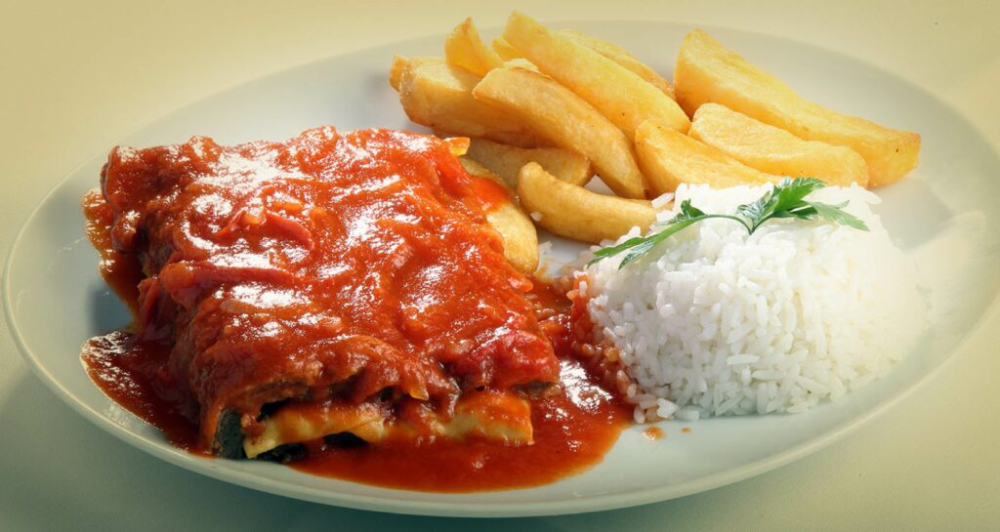

Receita Bife à Parmegiana.
Olá meu nome é Mateus Rocha Camargo e este é o meu Blog construído para as atividades finais de WebLab.
Aqui compartilharei um pouco da minha trajetória acadêmica e interesses.
Aqui você verá receitas, estudos e alguns fatos sobre mim.
Caso queira entrar em contato, acesse a aba "Contato" do Blog e insira suas informações.

Receita Bife à Parmegiana.
Como conquistei minha vaga em Ciência da Computação na UPF.